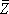
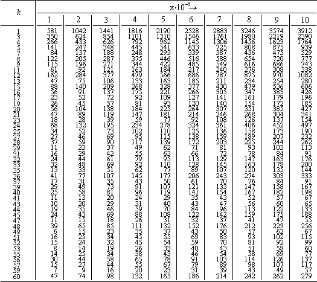
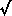
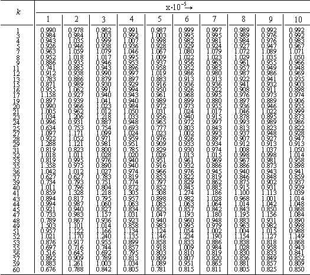

|
On the Distribution of Mersenne Divisors By Daniel Shanks and Sidney Kravitz
The Mersenne numbers are those of the form M p = 2 p - 1 with p prime. The only possible divisors of M p are those of the form 2kp + 1. Let f k (x) be the number of M p with p < x that have a prime divisor d = 2kp + 1. As is known, it has not been proven, even for a single k, that
as x oo">. It is also known that
for all k of the form 4m + 2, but, with these values of k excluded, one expects, heuristically, that (1) is true for all other k = 1, 3, 4, 5, 7, 8, .... We conjecture, in fact, a stronger result that includes both (1) for these allowed k, and (2) for those excluded:
In (3) the product is taken over all odd prime q, if any, that divide k, and (x) is the well-known conjectured estimate for the number of twin-prime pairs < x:
The larger range of x here, and the sufficient range of k, enables us to make a significant test of (3). We find it convenient, however, to replace the (x) in (3) by the actual number of twins, Z(x), since these are simple integers which are in sufficiently good agreement with (x). Further, while such a change in (3) makes the infinitude of f k (x) depend upon that of Z(x), we do not regard this as a defect. On the contrary, it is highly likely that any proof of
could be readily adapted to prove
also, and we prefer to emphasize this relationship.
f k (x) 
In Table 2 we list the ratios:
The counts Z(x) were taken from [2], and are repeated here in Table 3 for convenience. Table 2 suggests that our conjectures (3) are true for all k. The deviations from unity seen there are not excessive considering the limited value of x, and the rather small totals found in certain cases, e.g., f 59 (10 6 ) = 57. The deviation seen, in fact, no doubt are due mostly to fluctuation terms of approximate order O(x), since these temporarily dominate (at these values of x) the conjectured actual second term involving log (2k)/log x.
r k (x) 
The heuristic argument for (3) is quite convincing,
especially in view of previous successes for similiar arguments. A
Hardy-Littlewood conjecture is
and, similarly, cf. [3], the number of integers n < x such that n and 2kn + 1 are both prime should be asymptotic to
Z(x)
Now the factor
for k = 1, 2, 3, or 4 (mod 4), respectively, and therefore represents the fraction of the primes 2kn + 1 which have 2 as a quadratic residue:
Finally, for such a possible prime divisor 2kn + 1, we assume that 1/k is the probability that 2 is a (2k)ic residue of 2kn + 1, for if g is a primitive root of 2kn + 1, by (9) we have
for some s, and we assume, that the probability of 2k | 2s is 1/k. For these primes, n and 2kn + 1, we therefore have 2kn + 1 | 2 n - 1. Combination of (7), (8), and (4) now yields (3). Now we wish to suggest two extensions of this work to others, since we think these to be of some importance, but are not satisfied with any efforts that we ourselves have made. (A) We note, first, that only the case k = 1 in (3) is a special case of the Bateman-Horn conjecture [3]. What generalization is needed to include other values of k? Consider first k = 3. As is known, any p = 6n + 1 can be written
but only those p where 3 | b have 2 as a cubic residue. By Landau's generalization of the prime number theorem to prime ideals, it follows that 3 | b occurs 1/3 of the time, asymptotically speaking. This verifies one case or our "assumption" above, namely, that the probability for k = 3 is 1/3. It is clear, then, that we wish a generalization of the Bateman-Horn conjecture [3], and also its extension by Schinzel [4], to include not only primes but also prime ideals. But we have not satisfied ourselves that we have obtained this with full generality and proper exactitude. (B) For no k has (3) been proven. Each such conjecture is essentially equivalent to the twin-prime conjecture (6), and, no doubt, will be proven when, and only when, (6) is proven. As is known, a much weaker conjecture has never been proven, namely, that there are infinitely many Mersenne composites. If (3) were true for even a single k, then there would be infinitely many composites. It seems to us that this weaker conjecture is provable, but we have not proved it. While (6) has not been proven, one can also examine the sequences
collectively, for all k. This has been done by Lavrik [5], and results have been obtained there concerning "almost all" k. If the generalization suggested in (A) is carried out successfully, it seems to us that Lavrik's techniques applied to our (3) should suffice to prove that there are infinitely many Mersenne composites, and probably also stronger results concerning a lower bound on their number. Further, one would then also have an upper bound on the number of Mersenne primes.
David Taylor Model Basin
1. S. KRAVITZ,
"Distribution of Mersenne divisors," Math.
Comp., v. 20, 1966, pp. 448-449. Received August 25, 1966. |

 2
2